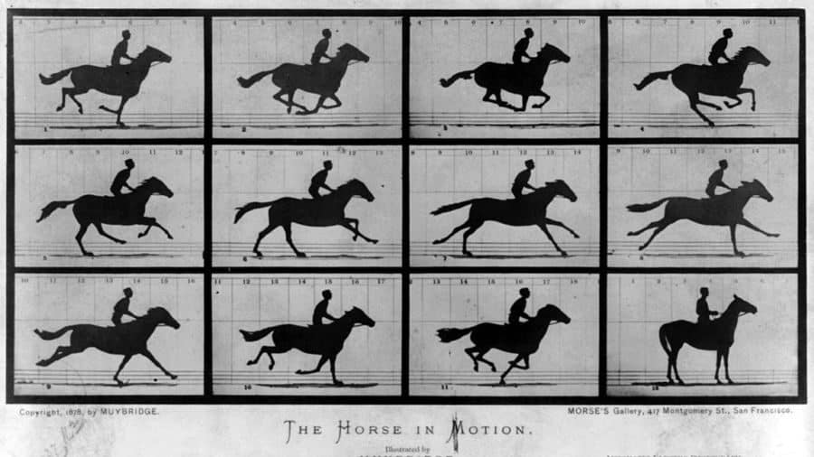

Who invented movies and when?
Early Years 1830s and the Zoetrope
In the early years, even before the invention of photography, toys were invented to view a series of drawings in rapid succession to create the illusion of motion. These drawings were first mounted on the face of a twirling disc called a phenakistoscope in 1832. And then in 1834, William George Horner, created a similar device. It was an early form of a motion picture projector that put the drawings inside of a drum that turned in a circular fashion to also create the illusion of motion, called a zoetrope.
He originally named it the Daedatelum, or “wheel of the devil” but Pierre Desvignes, a French inventor, renamed his version of it, the zoetrope, (a Greek word for “things that turn).
Zoetrope in action
1840 saw Alexander Wolcott’s invention of the first camera that produced photographs that would not fade quickly.
But motion pictures would not exist until live action could be photographed simultaneously and spontaneously.
This was only possible with two things - the innovation of a photographic process in 1870 which reduces exposure time from one hour to one-hundredth of a second, and two, a certain technological development by Eadweard Muybridge from 1872 to 1877.
The 1870s and a Bet
The 1870s saw incredible innovation for the motion picture. During 1872 and 1877, British American inventor, Eadweard Muybridge worked for California Governor Leland Stanford. Stanford was a racehorse breeder and hired Muybridge to prove that a galloping horse lifts all four hooves off the ground at once. Conventions of that time and common illustrations proved otherwise, and of course the human eye couldn’t capture movement that rapid. So Muybridge was hired to help Stanford win this bet. Muybridge toiled and worked with multiple cameras to take successive photos of horses in motion. It wasn’t until 1877 that he figured it out. On a Sacramento racecourse, he set up a battery of twelve cameras with wires that stretched across the track, and each wire operated their shutters. So as a horse rode down the track, its hooves would trip each shutter to expose a successive photo of the gallop. These 12 photos captured the horse in motion and they were able to confirm Stanford’s belief.
Technically, this is the first motion picture ever made.
